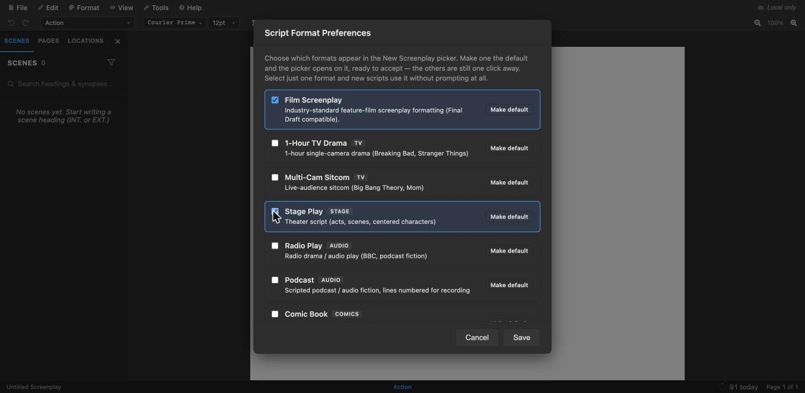
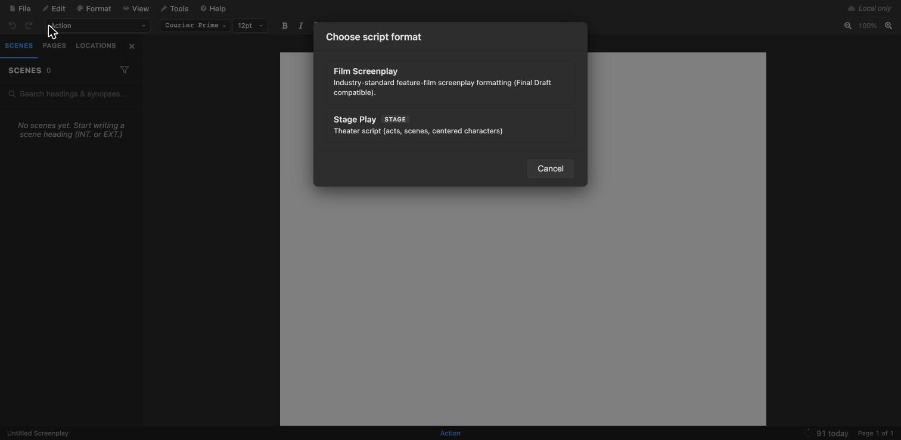
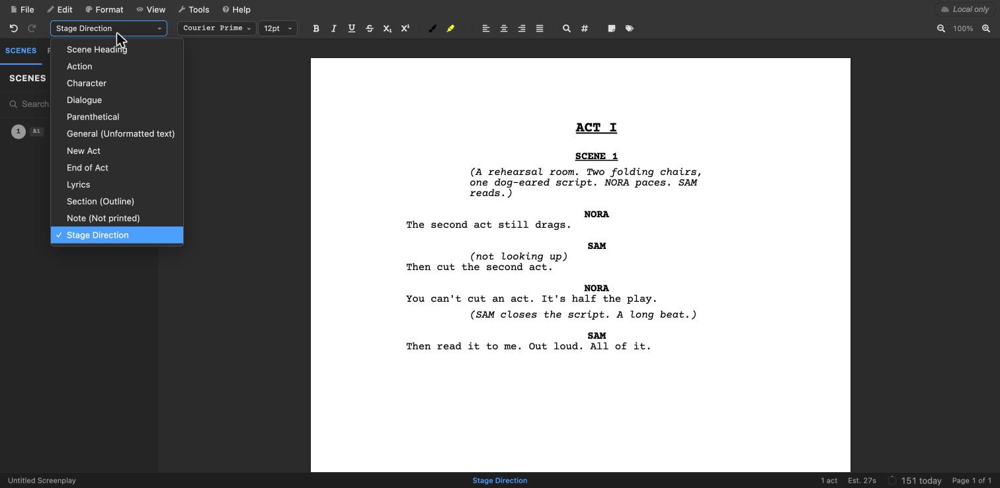

Stage play format at a glance
- Act and scene headings centred: ACT I, SCENE 1. Each act starts on a new page.
- Character names centred, in capitals, above every speech.
- Dialogue runs the full width of the page, margin to margin.
- Stage directions are indented, in italics and in parentheses.
- Short directions inside a speech go in parentheses on their own line, under the character name.
- A 12-point font, usually Courier or Times New Roman, with 1-inch margins.
That’s the format most theatres, contests and publishers expect for a new play in English. The rest of this guide goes through each element, shows how a play differs from a screenplay, and walks through writing one in OpenDraft, a free screenwriting app with a stage play template built in.
Check the submission guidelines first
Play format is a convention, not a rule book, and it varies more than screenplay format does. Some theatres and publishers ask for their own layout. If a contest or theatre gives guidelines, follow them over anything here.
The elements of a stage play
Act and scene headings
A play is divided into acts, and acts into scenes. Headings are centred, usually in capitals: ACT I or ACT ONE, then SCENE 1 or Scene One. Pick one style and use it throughout. Each new act starts at the top of a new page. Many writers end an act with END OF ACT I and the whole script with END OF PLAY.
A play doesn’t use a film-style INT. KITCHEN – NIGHT heading. Where and when a scene happens goes in the stage directions that open it.
Character names
The speaker’s name goes above each speech, centred and in capitals. Use the same name every time: if the character list calls her NORA, she’s never MRS. HALE in one scene and NORA in the next.
Dialogue
Dialogue runs the full width of the text area, from the left margin to the right. That’s the clearest visual difference from a screenplay, where dialogue sits in a narrow column in the middle of the page.
Stage directions
Stage directions describe what the audience sees: the set, entrances and exits, movement, lighting and sound cues. They’re indented, set in italics and enclosed in parentheses:
(The lights rise on a sparsely furnished room. NORA paces.)
Many playwrights also put a character’s name in capitals inside a stage direction, so actors can spot their own business quickly. Keep directions short. In theatre, the director and actors decide most of the movement, and a script that choreographs every gesture reads as overwritten.
Parentheticals
A short direction for how a line is said, or a small action in the middle of a speech, goes on its own line under the character name, in parentheses: (not looking up). Use them sparingly, for the moments when the meaning would otherwise be lost.
Songs and lyrics
In a musical, lyrics are usually set apart from spoken dialogue: often indented, in capitals or italics, depending on the publisher’s house style. Whatever you choose, keep sung and spoken lines visibly different.
The pages before the play
Before Act I, a play script usually has:
- A title page: the title, “by” and your name, centred, with your contact details at the bottom.
- A character list (cast of characters): each character, with a short description such as age and one line about who they are.
- Setting and time: where and when the play takes place, in a sentence or two.
Page numbers
Pages are numbered at the top right. Some theatres prefer act-scene-page numbering, for example 1-2-14 for Act 1, Scene 2, page 14. Others are happy with plain consecutive numbers. If the guidelines don’t say, consecutive numbers are fine.
Stage play vs screenplay format
| Stage play | Screenplay | |
|---|---|---|
| Divisions | Acts and scenes, with centred headings | Scenes with sluglines (INT. HOUSE – DAY) |
| Character names | Centred, capitals | Indented about 3.7 inches, capitals |
| Dialogue | Full page width | Narrow column in the middle |
| Description | Stage directions: indented, italic, in parentheses | Action lines: full width, plain text |
| Camera | None: no shots, no transitions | Shots and transitions (CUT TO:) |
| Front matter | Title page, character list, setting | Title page only |
How to write a stage play in OpenDraft, for free
You can lay all this out by hand in Word or Google Docs, but you’ll spend your time fighting indents and tabs instead of writing. OpenDraft is a free, open-source screenwriting app with a stage play format built in. It does the layout as you type, in your browser at open-draft.com or in the desktop and mobile apps.
1Turn on the Stage Play format
Choose Format → Script Format Preferences…, tick Stage Play and click Save. The same list has formats for TV drama, multi-camera sitcoms, radio plays, podcasts and comic books.

2Start a new stage play
Choose File → New Script and pick Stage Play.

The new script opens with ACT I, SCENE 1 and an opening stage direction, ready to replace with your own.
3Write, and let the format follow
Each element leads into the next as you write:
- Press Enter after a stage direction to start a character name, and again for their dialogue.
- Press Enter after dialogue for the next character.
- Press Tab after a character name to add a parenthetical.
To switch a line to something else, such as a stage direction in the middle of a scene, a new act or lyrics, pick it from the element menu at the top left of the toolbar.

OpenDraft starts every act on a new page automatically. Add your title page from Format → Title Page….
4Export a PDF to submit
When it’s ready, File → Export → PDF gives you a file to send. If you’re sending it to several theatres or readers, PDF with Watermark or Password… can stamp each copy with the reader’s name. You can also export to Word if a dramaturg wants to make tracked changes.
Your script stays yours
In the browser, OpenDraft keeps the script on your own computer unless you sign in and save it. The desktop apps store scripts on your own device. Download the free app for macOS, Windows, Linux, iPad or Android to keep working offline.
Questions
What font should a stage play use?
A 12-point font. Courier is the traditional choice, and Times New Roman is also widely accepted for plays. Whichever you use, use it throughout.
How long is a stage play script?
It depends on the layout, because play formats vary more than screenplay formats. As a rough guide, a full-length play usually runs to between about 80 and 120 pages, and a one-act play is much shorter. If a contest gives a page or time limit, that’s the number that matters.
Can I write a stage play in Google Docs or Word?
Yes, with a template and a lot of manual indenting. A dedicated app keeps the layout consistent automatically. OpenDraft is free, and it can export your play to Word whenever someone needs a .docx.
Is UK stage play format different?
The building blocks are the same. British scripts often put the character name on the left, in the margin, beside the speech, instead of centred above it. Follow the theatre’s guidelines when they specify a layout.
Does OpenDraft handle musicals and other formats?
Its stage play format includes a Lyrics element for songs. OpenDraft also has formats for film, one-hour TV drama, multi-camera sitcom, radio plays, podcasts and comic books, all free.